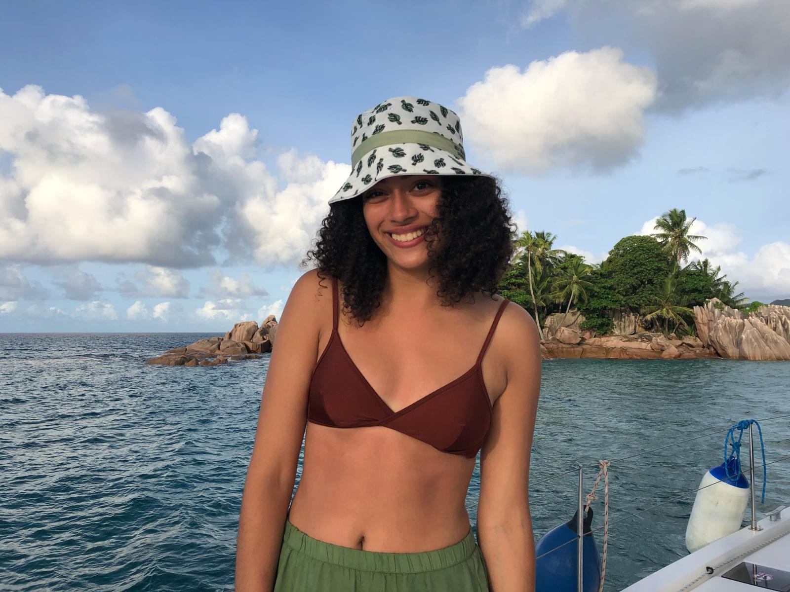
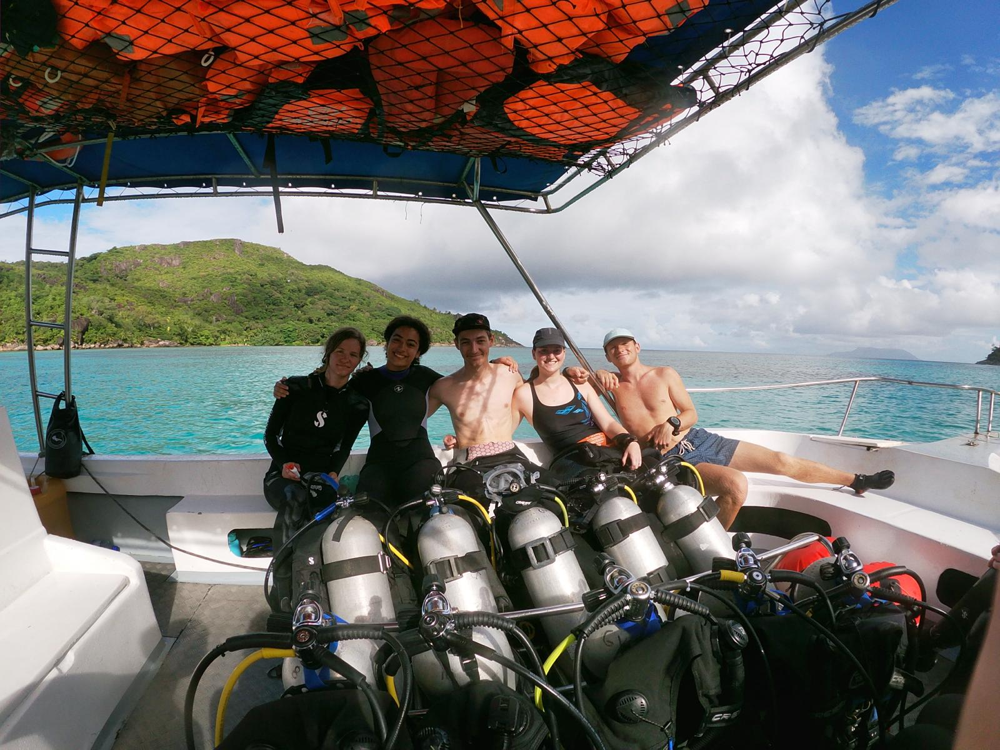
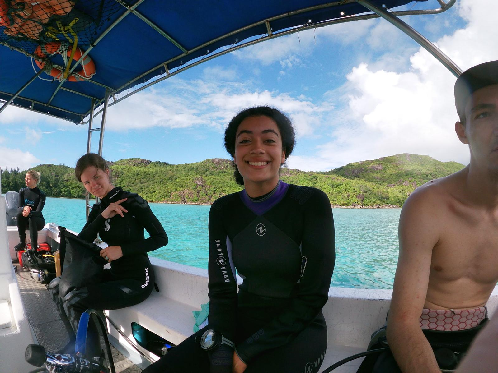
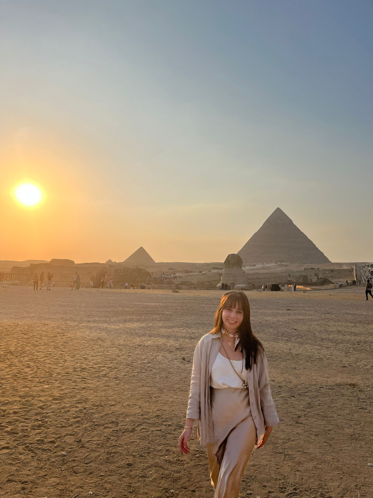
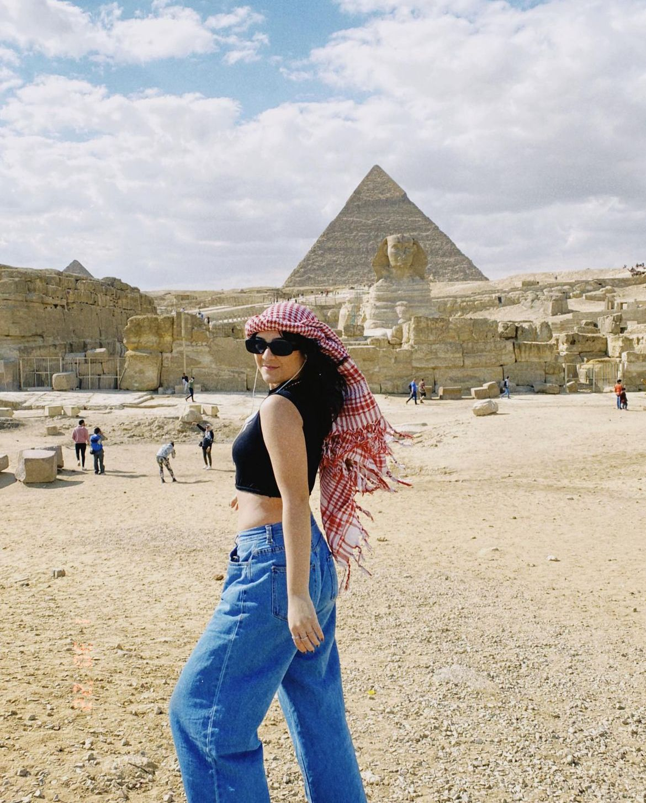
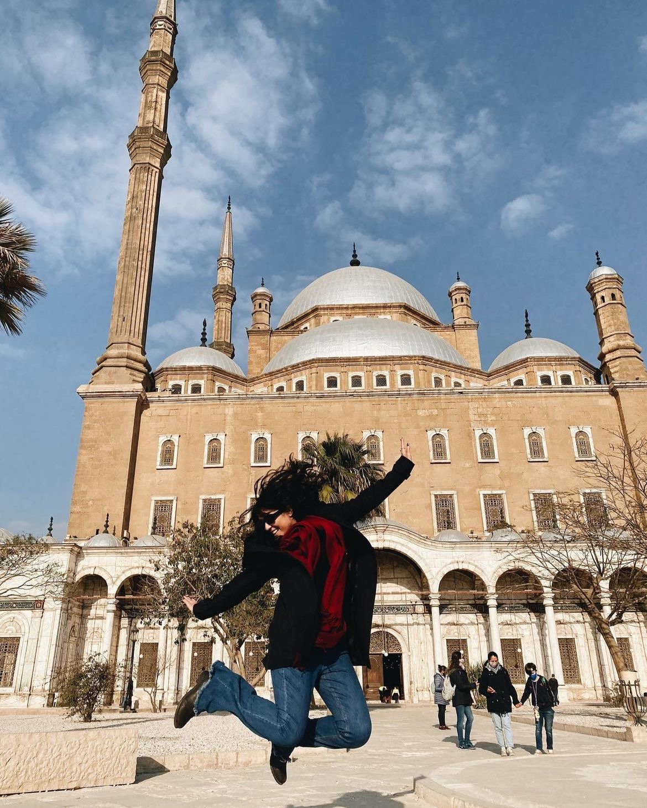

Welcome to our travel adventure! I'm a huge travel enthusiast, which I am sure is shared by many of you, having explored 23 countries and 29 territories so far, with plenty more on my bucket list.
For this feature, I had a blast chatting with four awesome women between 21 to 25 years old who've bravely taken on solo travel around the globe. They shared their insights on their favorite trips around the world.
So, let's dive into their stories and the amazing places they've visited!
📍1st stop - Seychelles
Seychelles 🇸🇨 is the smallest country in Africa!
Hannah Neves, 23, has traveled to 21 countries and chose Seychelles as her favorite destination.

Pictures as a courtesy of Hannah Neves
“I really loved it because it was very sunny, the weather was warm, there were a lot of beaches,” she said. “The people were very nice and welcoming.”
Seychelles, an island country and archipelagic state with 115 islands in the Indian Ocean, boasts numerous beaches, diverse fauna, and flora, making it a nature enthusiast's paradise.
Hannah visited Seychelles to participate in marine conservation efforts near the capital, Victoria. She went scuba diving multiple times a day, documenting coral loss and invertebrate populations in the ocean's national park areas.

Picture as a courtesy of Hannah Neves
“I made lots of amazing friends and got to talk to a lot of conservation officials and specialists in the area,” she said. “They all do good work.”
Overall, Seychelles is considered a safe destination, especially for travelers without a car.
“I was actually very surprised at how effective and easy to understand the public transport system was,” she said. “I was able to go to very far away places using buses which was very cheap. That was really fun.”

Picture as a courtesy of Hannah Neves
📍2nd stop - Egypt
With a history spanning millennia, Egypt 🇪🇬is known as a cradle of civilization, dating back to the 6th–4th millennia BCE.
Lorena Ribeiro, 24, has traveled to 47 countries, starting her explorations during college and continuing ever since. Among all her travels, Egypt stands out as the most surprising destination.
“I always thought of Egypt as primarily a historical destination, always thinking that if I toured for more than a week I would just start to get bored by seeing the same type of architecture over and over and over again,” she said. “When visiting Egypt, I was actually mindblown by the diversity of fantastic activities available.”
Believe it or not, other activities include swimming with dolphins!! For nature enthusiasts, Egypt can also be a great destination.
“My happiest ever memory is the time I went swimming with hundreds of wild dolphins in Marsa Alam.”
“Asking why I keep traveling is the same as asking why I go to my yearly doctor’s visit,” Lorena said. “I mean, as long as I can afford to go, I will go, because I recognize how much it benefits my health.”
Video as a courtesy of Lorena Ribeiro

“Although I did tons of historic tours, and visited the pyramids in Giza, I still feel like I have to go back to Egypt to spend over a month and explore a lot more of what the country has to offer.”
“From river cruises to desert tours to insane diving and snorkeling opportunities.”
“Recently, I went through I major burnout from a corporate job,” Lorena said. “I did therapy. I read all types of self-help books and even explored some religious practices to understand what drives me and why I exist.”
“I did a lot of reflection,” Lorena said. “I realized that even in my most tired days, the only thing that could keep me up late, or make me wake up early was looking for travel destinations or actually traveling.”
Photos as a courtesy of Lorena Ribeiro
Yasmin Almeida, 21, the youngest among those interviewed, shared her surprise and enthusiasm for Egypt, naming it her favorite travel destination. She ventured to Egypt with AIESEC, an international youth-led non-profit organization providing business development internships worldwide to young people. During her program, she actively promoted tourism in Egypt by exploring cities and showcasing the places they visited.
“My favorite country that I have been to so far has definitely been Egypt because of the people and the culture. It is a place that I have a lot of good memories,” she said. “I got to meet so many people from different parts of the world and they have become my friends and ever since I can not let go of them. We have been friends since 2022 when I went to Egypt.”

Picture as a courtesy of Yasmin Almeida
Yasmin, currently studying international relations in Brazil, sought a cultural experience in a foreign country.
“It is such a beautiful and historical place. You can learn a lot,” she said. “It is very different from how things work here in America, and in South America specifically. This is why it is currently my favorite country.”

Yasmin at the Mosque of Muhammad Ali. Picture as a courtesy of Yasmin Almeida
📍3rd stop - South Africa
South Africa 🇿🇦is a diverse country in fauna, flora, and people.
Amaya Adetiba, 22, has Cape Town, the legislative capital of South Africa, as her favorite destination. Having visited 25 countries and participated in Semester at Sea, she was deeply impressed by her experiences in the city.
“The people there were incredible. They were amazing,” she said. “They were really kind, and it was the first time I’ve been around so many Black people, so many people who look like me. The food was incredible, and I heard music that I liked everywhere.”
While the stunning topography left a lasting impression, it was the warmth and diversity of the people that truly captivated Amaya. She formed bonds with fellow hostel guests, bartenders, and individuals from around the globe.
“Just talking to people, connecting with people who look like me, then also seeing a ton of people who don’t look like me, and a fusion of a bunch of different people,” she said. “The food is a fusion of everything.”
Amaya perceived Cape Town as distinct from the rest of South Africa, noting a rich tapestry of cultures that fascinated her. In terms of security, South Africa has had a bad reputation, especially for women travelers, but Amaya felt safe during her stay.
“Cape Town in itself is perfectly safe. I felt perfectly fine going to different places by myself,” she said. “That being said, the reason Cape Town gets such a bad rap is because right outside, as soon as you leave the city area, you are in more impoverished areas, so that leads to more violence. I feel like so much of what I read was about was that is dangerous, but when I got there, it was amazing.”
Her advice is to opt for Uber rides instead of walking, particularly in areas with nightlife, to minimize the risk of robbery and pickpocketing. Amaya cherished her experiences at the Cape of Good Hope, Boulders Beach for swimming with dolphins, and the Oranjezicht market.
“I ubered by myself all the time. The idea that women shouldn’t be by themselves, I don’t particularly subscribe to that unless I feel unsafe, then it’s different,” she said. “I didn’t feel unsafe at all and I left the city to do the Cape of Good Hope where you go to see where the Atlantic Ocean and the Pacific Ocean meet. That is not in Cape Town, but you can just take an uber and it’s fine.”